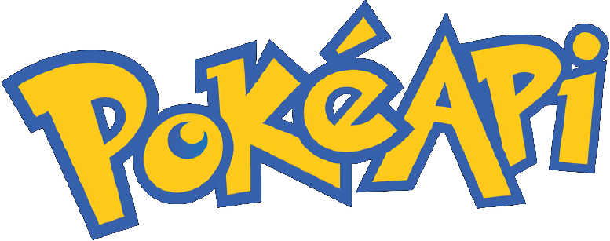

<ion-header>
  <ion-toolbar background="primary">
    <ion-title primary class="title">
      
      <b>Client</b>
    </ion-title>

  </ion-toolbar>

</ion-header>

<ion-content>
    <form  #form="ngForm" (ngSubmit)="catch(form)">
        <ion-item>
            <ion-input  name="pokename" type="text" placeholder="Gotta catch 'em types:" ngModel required clearInput></ion-input>
          </ion-item>
          <div class="checkbtn">
              <ion-label item-left>Get all info</ion-label>
              <ion-checkbox class="check" name="catchAll" slot="start" (ionChange)="optionChanged()"></ion-checkbox>
          </div>
          <div padding>
              <ion-button  size="large" type="submit" expand="block">Catch</ion-button>
            </div>
    </form>
    <ion-list lines="none">
      <ion-item class="poketitle">
          <ion-input [(ngModel)]="pokename" [readonly]=true slot=start></ion-input>
      </ion-item>
      <ion-item *ngIf="totalPokeFavs != undefined">
          <p>Favorited: {{totalPokeFavs}}</p>
        </ion-item>
      <ion-item>
        <ion-buttons slot="start" *ngFor="let t of pokeTypes">
            <ion-button ion-button small  color="white" 
            [ngStyle]="{'background-color':t.color}">
                {{t.name}}
              </ion-button>
        </ion-buttons>
      </ion-item>
    </ion-list>

</ion-content>
<ion-footer>
  <ion-toolbar>
      <div class="wrapper" center>
          <div class="pokeball"></div>
      </div>
    <p class="footer" slot="end">Powered by: Laura Cortez</p>
  </ion-toolbar>
</ion-footer>
